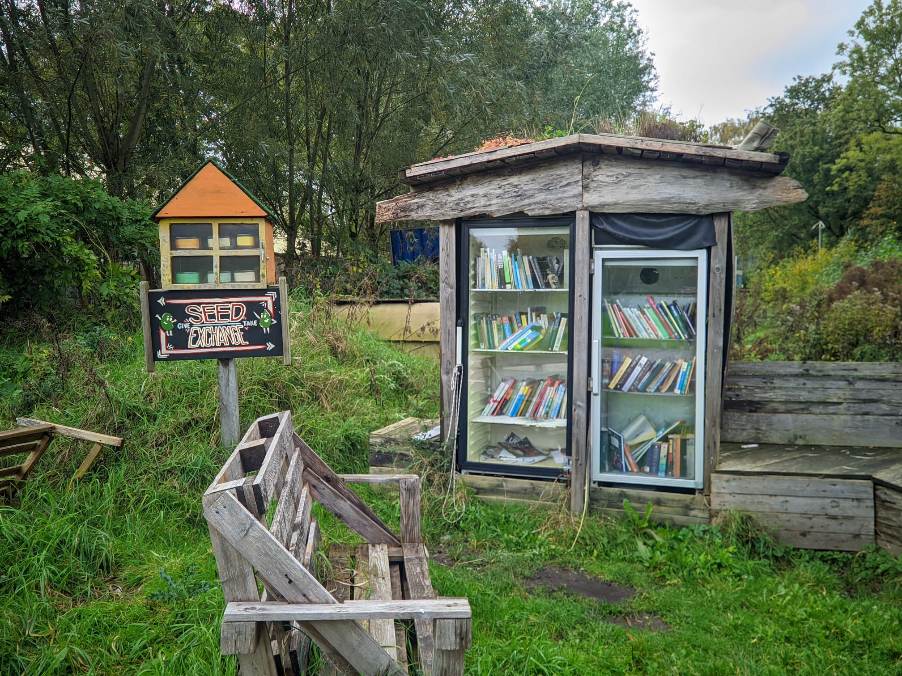
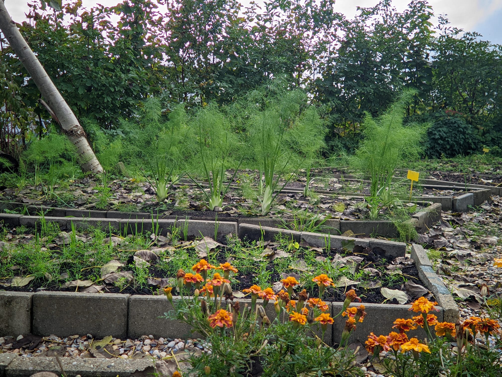
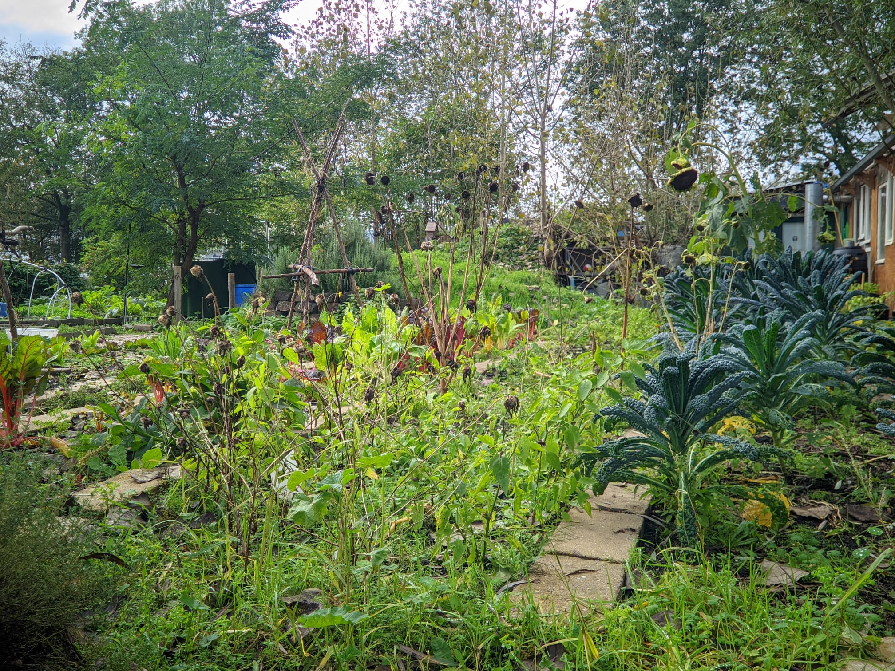

SEED EXCHANGE & BUURT BIEB
De Seed Exchange is een huisje waarin enkele bakjes met zaadjes staan. Het idee achter dit huisje is dat als je bijvoorbeeld geopende zakjes zaadjes over hebt, je deze hier kunt doneren in plaats van ze weg te gooien. Je kunt ook zelf wat zaadjes pakken als ze daar liggen, om natuurlijk zelf iets te verbouwen. Op deze manier worden zoveel mogelijk zaadjes goed benut.
De buurtbibliotheek is een huisje waar boeken in staan! Hier kun je je boeken achterlaten in plaats van ze weg te gooien, of je kunt boeken die er staan pakken als ze je interesseren om te lezen. Wederom een goede manier om verspilling tegen te gaan en een mooi groen initiatief.
FOOD RESCUE
Het 'Food Rescue'-initiatief is opgezet om voedselverspilling tegen te gaan. Elke dag worden er honderden en duizenden kilo's voedsel weggegooid en verspild. Vrijwilligers van de Kaskantine gaan dit tegen door oud of overbodig voedsel overal en nergens op te halen om er zelf weer gerechten van te maken, of om er compost van te maken, wat de groei van toekomstige planten uiteraard bevordert.Het 'Food Rescue'-initiatief is opgezet om voedselverspilling tegen te gaan. Elke dag worden er honderden en duizenden kilo's voedsel weggegooid en verspild. Vrijwilligers van de Kaskantine gaan dit tegen door oud of overbodig voedsel overal en nergens op te halen om er zelf weer gerechten van te maken, of om er compost van te maken, wat de groei van toekomstige planten uiteraard bevordert.
HULP BIJ TUINIEREN
Er wordt hulp geboden aan mensen die moeite hebben met tuinieren. Bij de Kaskantine wordt kennis gedeeld en word je geholpen met de juiste tips en tricks om een mooie moestuin neer te kunnen zetten! Hoe meer mensen hun groenten zelf verbouwen, hoe beter dit is voor onze planeet!
PLANT TO PLATE
In het restaurant worden vegetarische gerechten geserveerd, en hiervan komt alles uit de eigen tuin. Hierdoor is alles lokaal en vers en dus zo groen mogelijk, aangezien er geen transport- of fabriekskosten aan verbonden zijn. Dit zorgt ervoor dat er minder CO2-uitstoot is en maakt dit dus een goed voorbeeld van een CO2-neutraal restaurant.
COMPOST CLUB
De Compostclub is een subclubje van de Kaskantine die zich puur richt op composteren, omdat het een effectieve manier is om klimaatverandering tegen te gaan. Hier wordt kennis gedeeld over composteren en hoe het het beste toegepast kan worden. Je kunt je aanmelden om voedselresten in te leveren, die dan worden omgezet in compost, zodat de grond gezond en voedzaam blijft voor de planten!